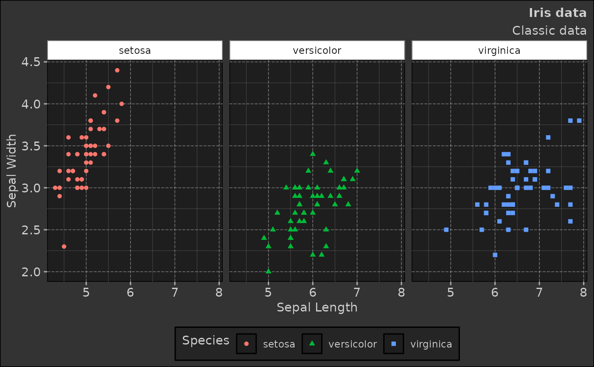
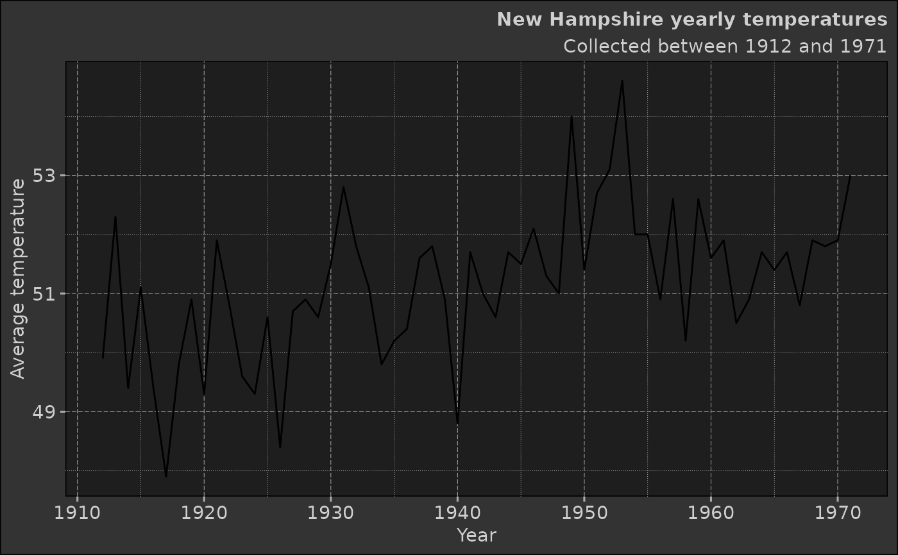

Dereck's ggplot theme (dark)
Author
Dereck Mezquita
This function allows you to add the derecksnotes theme to your ggplot graphics.
Examples
iris |>
ggplot2::ggplot(ggplot2::aes(x = Sepal.Length, y = Sepal.Width)) +
ggplot2::geom_point(ggplot2::aes(color = Species, shape = Species)) +
ggplot2::labs(title = "Iris data", subtitle = "Classic data", x = "Sepal Length", y = "Sepal Width") +
ggplot2::facet_grid(~Species) +
dmplot::theme_dereck_dark()

data.frame(year = time(nhtemp), tmps = as.matrix(nhtemp)) |>
ggplot2::ggplot(ggplot2::aes(x = year, y = tmps)) +
ggplot2::geom_line() +
# geom_hline(yintercept = 0, size = 1, colour = "#333333") +
ggplot2::labs(title = "New Hampshire yearly temperatures", subtitle = "Collected between 1912 and 1971", x = "Year", y = "Average temperature") +
dmplot::theme_dereck_dark()
#> Don't know how to automatically pick scale for object of type <ts>. Defaulting
#> to continuous.
